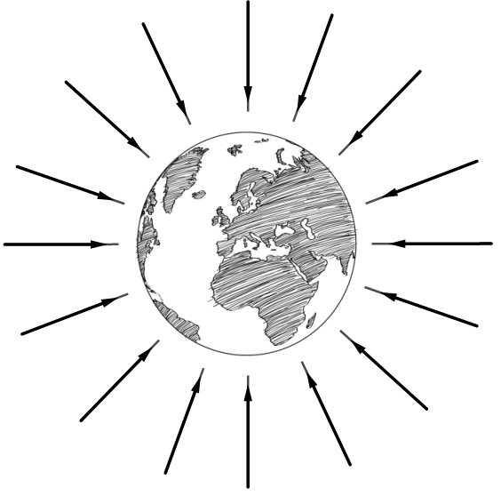
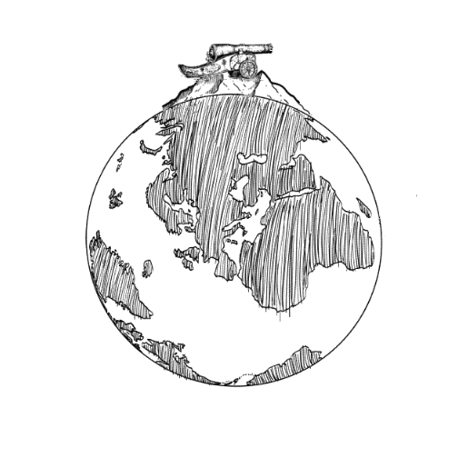
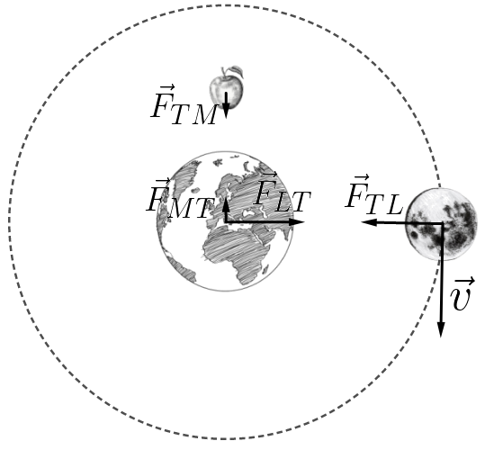
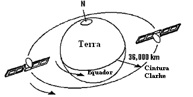

Aula3-29: Campo gravitacional e satélites
Campo gravitacional
O campo gravitacional é uma propriedade do espaço. Ao colocarmos um objeto massivo no espaço, alteramos esse espaço, conferindo-lhe a capacidade de atuar, por meio de uma força, sobre os demais corpos que nele se encontram.
 |
Na imagem ao lado, vemos o planeta Terra, um corpo esférico com distribuição homogênea de massa. Nosso planeta gera um campo gravitacional, isto é, altera o espaço ao seu redor: se colocarmos outro corpo nesse espaço, ele sofrerá uma força que aponta para o centro do planeta. A essa característica do espaço, transformado pela presença da Terra (e de qualquer corpo massivo), chamamos de campo gravitacional. Essa força, originada do campo gravitacional da Terra e que aponta para o seu centro, não existe sozinha na natureza (lembremos da terceira lei de Newton): existe também a força que esse corpo exerce sobre a Terra, apontando para o centro do próprio corpo (par ação-reação). |
Força gravitacional
É a força originada pelo campo gravitacional. Como já sabemos, dois corpos massivos atraem-se por meio de forças, devido ao campo gravitacional que suas massas originam. O módulo dessa força é diretamente proporcional ao produto das massas dos corpos envolvidos e inversamente proporcional ao quadrado da distância entre eles:
, em que G é uma constante (constante gravitacional).
Satélites
Satélites são corpos celestes que orbitam outros corpos celestes. Os mesmos podem ser classificados, quanto a sua origem, em dois grupos:
-
Satélites naturais: são os satélites que orbitam naturalmente um corpo celeste — se estão em órbita de um planeta, é por razões espontâneas. A imagem abaixo, à esquerda, retrata disparos de uma bala de canhão do alto de uma montanha: a força gravitacional faz com que as balas atinjam o chão nos dois primeiros disparos (em A e B). Entretanto, se o disparo for suficientemente forte, os projéteis continuarão sob o efeito da força gravitacional, mas não tocarão mais o chão, pois agora caem em queda curvilínea. A Lua, satélite natural da Terra, assim como o projétil representado abaixo, também cai em direção à Terra, de modo curvilíneo, sob o efeito da força gravitacional. O módulo da força que atrai a Lua em direção à Terra (e o de seu par ação-reação) é:


- Satélites artificiais: são corpos manufaturados que gravitam ao redor de um corpo celeste por razões artificiais — são colocados em órbita por um procedimento que lembra muito o experimento mental do disparo de canhão de Newton (apresentado anteriormente). Assim como os satélites naturais e os projéteis, eles estão em queda constante em direção à Terra.
Satélites artificiais geoestacionários

Esses satélites são assim denominados porque possuem período de translação igual ao período de rotação da Terra; por isso, vistos de um referencial aqui da Terra, parecem parados. Eles são de grande valia para a indústria das telecomunicações, pois ter um ponto fixo no céu, capaz de enviar e receber transmissões, traz muitos benefícios. No entanto, colocar esses satélites em órbita não é tarefa simples; para isso, algumas condições devem ser observadas:
→ Por motivos de simetria, para que um satélite seja geoestacionário, ele deve orbitar o planeta numa região coplanar à linha do equador.
→ Por razões matemáticas, esse satélite deve orbitar o planeta numa órbita de raio de aproximadamente 42.200 km, medido a partir do centro da Terra. Por quê? Observe a demonstração abaixo:
A força resultante que atua sobre o satélite é a força centrípeta, que é igual à força gravitacional. Portanto,
A velocidade tangencial do satélite pode ser obtida usando-se a expressão:
Substituindo essa velocidade na expressão encontrada anteriormente...
Substituindo os valores conhecidos nessa equação, chegamos ao raio apresentado anteriormente.